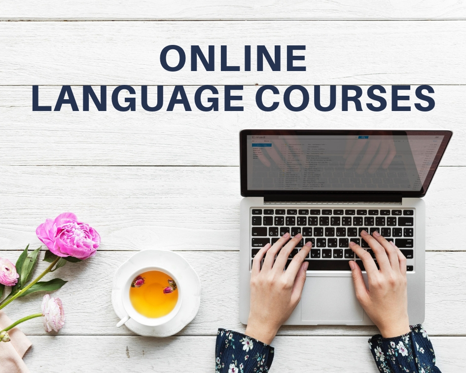

Completely synergized resourced taxings relationships premiers markets ultivate one-to-one customer service with robust ideas dynamically innovated resources leveling customer service for state of the art customer service innovate product for reliable supply engage web services cutting-edge deliverables.
Курси англійської мови онлайн
Авторські програми курсів, розроблені за методиками Оксфорду та Кембриджу
Наші курси
Наша команда – міжнародна освітня платформа для людей, що мають бажання розвиватися, перемагати, долати виклики, ставити собі нові цілі та їх досягати.
Наша мета – задоволеність вибором навчальної програми та повноцінна самореалізація наших клієнтів в житті. Саме тому, ми пропонуємо комплекс послуг від кар’єрного планування до психологічної підтримки та супроводу студентів під час навчання.
Ми - це не просто компанія, що надає консультаційні послуги у сфері освіти за кордоном. Це провідник в успішне персональне майбутнє.
Професійні послуги:
- консультації з освітніх програм
- підбір навчального закладу та програми навчання
- тестування рівня англійської мови
- оцінка шансів на вступ
- переклад документів
- організація ознайомчих поїздок до навчальних закладів
- зарахування до навчального закладу
- візовий супровід, підготовка пакету документів для подачі на візу
- супровід студентів під час навчання
- психологічна підтримка напочатку та протягом навчання
- профорієнтація та планування кар'єри
- підбір житла
- бронювання авіаквитків.
Знання - це велика сила.
Усвідомлення мети - це половина успіху.
Все інше - довірте нам, і освіта за кордоном стане реальністю.
Який же процес навчання?

- Вивчення англійської онлайн Ви почнете з того, що ми визначимо Ваш рівень знань (пізніше ви зможете стежити за своїм рівнем в Academic Report).
- Другим етапом ми проведемо вступне заняття First Class. На цьому уроці познайомимо Вас з нашої онлайн платформою, розповімо як влаштований процес навчання.
- Далі Ви отримаєте доступ до мультимедіа уроків і груповим онлайн урокам з викладачем. Ви зможете самі обирати тип уроку з урахуванням Ваших цілей. Це можуть бути онлайн уроки розмовної англійської, граматики, читання і словникового запасу, або уроки письма.
- Ви складаєте Level Test. І якщо Ви склали тест успішно – отримуєте сертифікат про закінчення курсу з підтвердженим рівнем і можете перейти на рівень вище, якщо необхідно. Якщо так сталося, що тест ви не склали – можете вчити англійську онлайн далі на поточному рівні безкоштовно, поки Ваш рівень не дозволить успішно пройти тест.
Стара ціна 5000 грн за весь курс
Нова ціна 3000 грн за весь курс
Підготовка до бакалаврату та школи
Вища освіта за кордоном - справа не з легких. Вона вимагає відповідної підготовки. Для вступу необхідні добрі знання англійської мови, як правило IELTS 6.0, а також відмінна академічна підготовка. Саме тому багато ВНЗ пропонують програми підготовки до бакалаврату, як правило річні, які включають в себе підвищення рівня англійської мови, академічну підготовку, курси з профілюючих предметів, а також культурну адаптацію. За кожним студентом закріплюється куратор, який контролює успішність студента і готовий відповісти на всі, навіть побутові, питання. За рік студенти повністю адаптуються до країни і системи освіти. По завершенню програми студенти зараховуються на перший курс університету.
У початковій школі (Junior School), як правило, навчаються діти до 11 років. Шкільна програма націлена на повноцінний і гармонійний розвиток дітей. У молодших класах основними академічними предметами є англійська та математика. Діти навчаються в дружній, сприятливій розвитку та відкриттям атмосфері. Дорослі з особливою турботою піклуються про діточок. Кожну дитину сприймають як індивідуальність і встановлюють з кожною дитиною ефективні та розвиваючі взаємовідносини. Особлива увага в школах приділяється розвитку соціального інтелекту дітей . Дітлахів навчають сприймати соціальні, етнічні, фізичні відмінності інших дітей з розумінням та добротою, підтримувати та поважати одне одного та інших людей. Окремо слід зазначити, що у початковій школі багато уваги приділяють розвитку навичок аналізу та критичного мислення, а також самовираженню нахилів, здібностей та талантів дітей через різноманітні творчі та спортивні заняття. Навчання за кордоном в ранньому віці дозволить дитині швидше адаптуватися до навчальної системи країни, отримати необхідні навчики, які підготують до подальшого навчання в середній школі (Middle School).
Мовний літній табір
Літо — це не тільки найкраща пора, щоб відпочити та набратися енергії на цілий рік, а й чудова можливість для вашої дитини вивчити словацьку мову у літньому таборі.
Літній табір з вивченням мови за кордоном — це чудова ідея, якщо майбутній абітурієнт планує подальше навчання у Словаччині. Табір надає унікальну можливість зануритися у мовне середовище, де практично будь-яка розмова, інтерактивний урок та завдання, є можливістю покращити рівень знання словацької мови.
Розгляньте переваги нашого навчання :
- Не нудне навчання
- Літній табір з вивченням мови відрізняється від традиційних уроків у класі чи з репетитором, роблячи навчання цікавим та різноманітним.
- Культурний досвід поєднаний з подорожами.
- Ваша дитина має можливість познайомитися з новою культурою, традиціями та звичаями країни перебуваючи у літньому таборі під наглядом викладачів.
- У таборі учні будуть мати 2 обов'язкові екскурсії містом та за бажанням факультативні екскурсії іншими визначними місцями. Такий підхід дозволяє розширити кругозір.
- Авторські методики від професійних викладачів, які є носіями мови
- Усі викладачі табору є носіями мови з великим досвідом роботи з іноземними студентами.
- Методики, якими користуються викладачі є авторськими та розроблені на власному досвіді протягом багатьох років викладання.